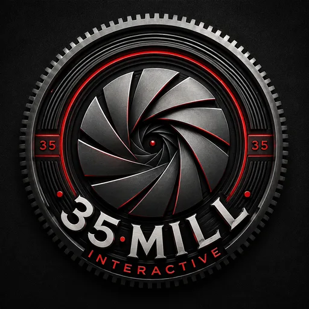

Altonis: Homepoint Crystals V2
Published mod for the Altonis: Afterfall – The Crownlands project. Its Shatter System is shown in the featured video above.
View on Workshop
35 Mill InteractiveGameplay Testing | Mod Development
Published Conan Exiles mod author pursuing a first studio QA role.
I'm an independent game systems creator and published Conan Exiles mod author working under the name 35 Mill Interactive. I build and test multiplayer RPG content, investigate unexpected behavior, and document findings for other creators.
My ongoing project, Altonis: Afterfall – The Crownlands, is a custom multiplayer RPG world with quests, branching dungeons, merchants, banking, travel, and progression, which I create, script, and administer myself.
I bring a player-focused eye for progression, usability, and game feel, backed by years of customer support, technical troubleshooting, and team-training experience.
Homepoint Crystals V2: Shatter System mod showcase.
Live on the Conan Exiles Steam Workshop.
Published mod for the Altonis: Afterfall – The Crownlands project. Its Shatter System is shown in the featured video above.
View on WorkshopPublished mod for the Altonis: Afterfall – The Crownlands project, the custom multiplayer RPG world I build and maintain.
View on WorkshopShort write-ups of testing work from my Conan Exiles project.
Full work history, capabilities, and project details.
Download Resume (PDF)Open to QA tester and game tester roles. Based in Wilmington, NC.